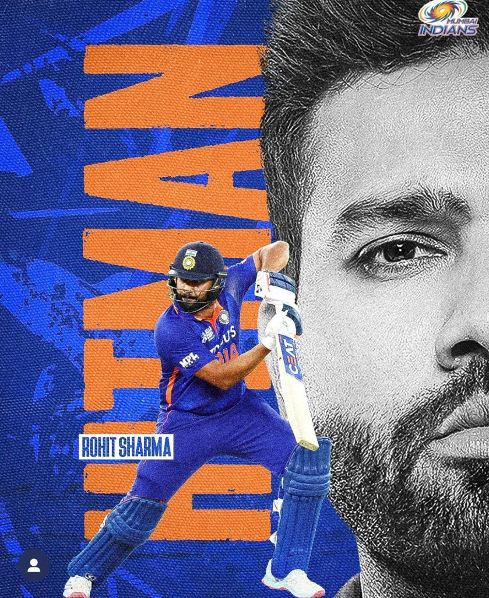

Rohit Sharama
Born 30 April 1987
HITMAN
Rohit Sharma has been synonymous with the term “talent” since he first picked up a cricket bat in his career. There's a lot to like about Rohit Sharma, whether it's his languid batting or his cool and calm demeanor as captain. Rohit belongs to the Mumbai school of cricket, and despite a rocky start to his international career in 2007, he has gone on to become one of the game's modern-day greats.
Carrer Brief
- 2nd most 100s in ODIs: 30
- Promoted as an opener in ODIs
- 3rd fastest to 9000 runs (217)
- 2nd most 50s in T20 career(33)
- 2nd most sixes in career combines in Test, ODI and T20I (502)
- Only cricketer to have three-double centuries
- First cricketer to score five centuries in a single edition of the World Cup
- Centuries in both the innings of a Test match.